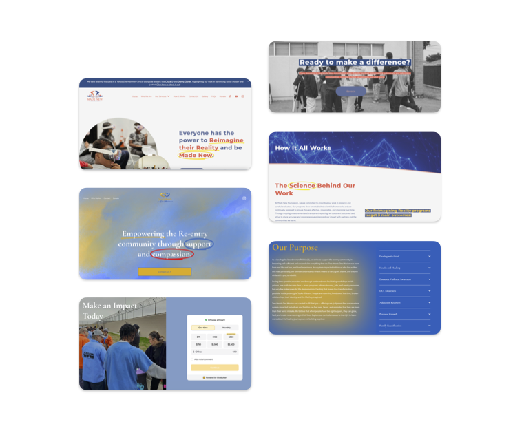
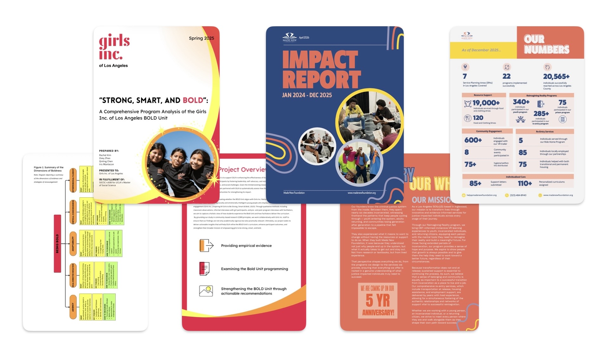
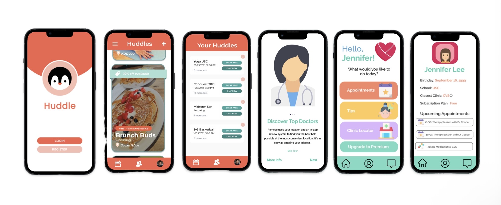
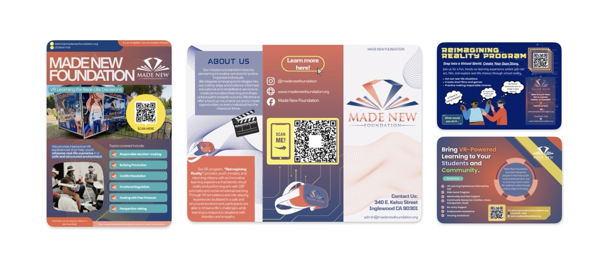
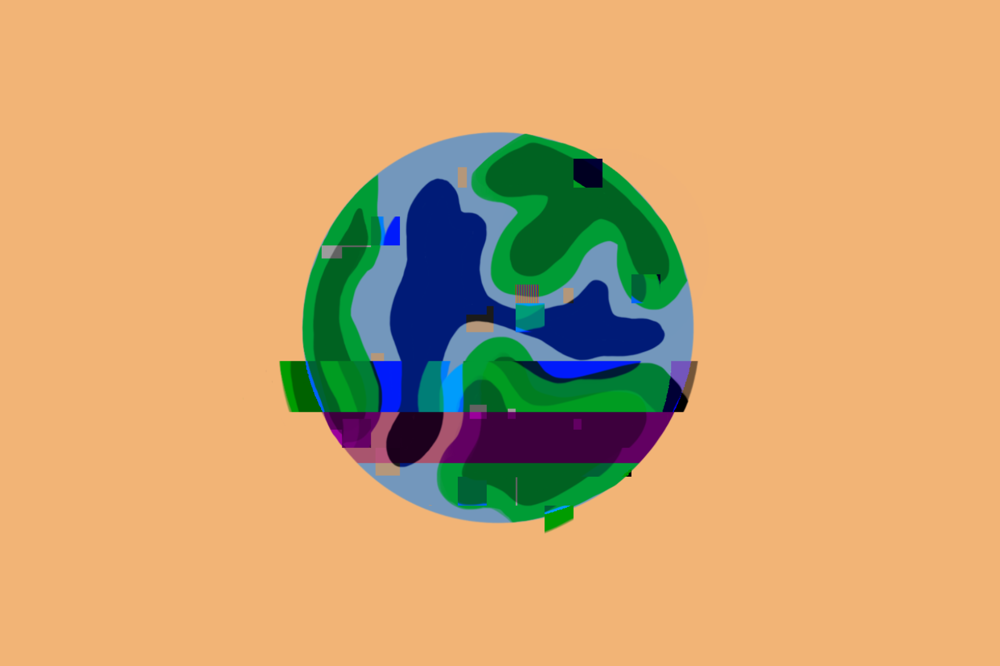

Social Science Researcher · Los Angeles, CA
I have a B.A. in Cognitive Science from USC and a Master of Social Science from UCLA! I spent most of those years in research labs trying to understand how people understand and cooperate. Over time, my research interests narrowed to empathy and prosocial behavior, and the ethical questions that arise as AI changes how people behave and understand the world. Since graduating, I've worked mostly in nonprofits, and I am working toward a career in research at humanitarian organizations, where I believe those questions matter the most.
An interactive, Claude-powered behavioral analysis tool that surfaces the empathic, cooperative, and cognitive dynamics driving behavior in real-world social scenarios. Enter a policy, program, or community problem — Prism draws on behavioral science, cognitive science, social psychology, and social science to analyze what is happening, why it persists, and what evidence-based levers could move the needle.

Made New Foundation and Two Hearts One Mission each needed a website that could speak credibly to funders and partners while still feeling approachable to the participants they serve. I chose Squarespace deliberately for both builds — neither organization has in-house technical staff, so the platform needed to be something their teams could maintain and update independently over the long term, not something that would break or go stale once my involvement ended. I handled information architecture, content strategy, and visual design end-to-end, translating each organization's mission and programs into a clear public-facing site built to last beyond my day-to-day role.

For Made New Foundation and Girls Inc. of Los Angeles, I put together stakeholder-facing impact reports that bring program outcomes, participant stories, service numbers, and financial snapshots into one coherent document. The goal in each case was the same: give funders, board members, and partners a clear, visual account of what the organization actually accomplished.

Remeco and Huddle were both early-stage app concepts I helped take from idea to something concrete enough to test. Remeco, an independent project, was a mental health app I designed from scratch — structure, screens, and flow. Huddle was a team project where I focused on organizing the core user paths and screen logic that turned a rough product idea into something the team could actually build against.

Alongside web and reporting work, I design print and digital materials for events, donor engagement, and day-to-day organizational needs — flyers, signage, promotional graphics, and training handouts. I move between Procreate for original illustration work and Canva for fast-turnaround, on-brand production, depending on what a piece calls for. The output ranges from one-off event graphics to reusable templates the organizations can adapt on their own after I'm no longer involved.
This review paper examines how generative AI chatbots can improve global crisis communication by delivering more personalized, context-sensitive guidance during moments of uncertainty. Using a literature-based analysis of crisis communication, cognitive barriers, and AI-mediated messaging, the paper argues that chatbot systems can help address confusion, mistrust, information overload, and differences in how people interpret risk. It contributes a framework for thinking about AI as a communication tool that can adapt public-facing crisis messages to different audiences without losing clarity, accuracy, or ethical responsibility.
Read the paper